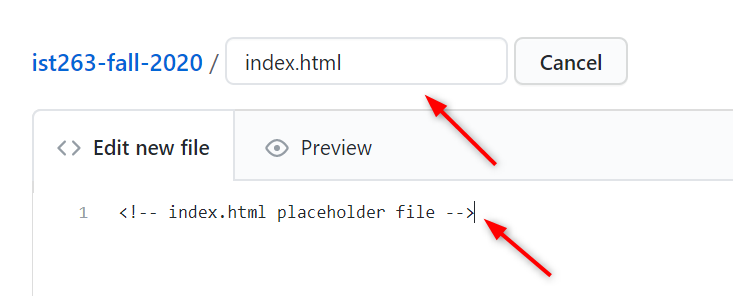

Computer Setup
In this class you will use tools and workflows that web developers use in the industry. Also, it is a lot more efficient than using the typical LMS. It will seem foreign when you start but be a little patient & persistant.
A separate page gives guidance for working with GitHub once you have created your account there: work-with-github. Also, here are a few links to access resources for IST263 online remote instruction sessions:
- Zoom.us instructional video tutorials for guidance about how that tool works.
- More to come, as needed...
1. Integrated Development Environment (IDE)
If you have used programs like MS-Word, you have used an IDE. IDEs are specialized programs that provide features and tools that make your development process efficient. Just like you would use MS-Word to write and format papers, resumes, or letters we will use something similar in this class to write HTML and CSS.
VS Code
You can download the free version from https://code.visualstudio.com/download. Choose the correct installer based on your computer OS.
Once the download is complete, launch the installer and follow the steps.
2. GitHub
GitHub is a web-based server for managing code. It helps a team of developers to contribute together to a single project. It also provides a way to store your code remotely and then display it via the browser using the GitHub Pages function.
Follow these steps to configure your GitHub account.
Setting up GitHub
Step 1: Signup for a Free GitHub Account. If you already have a GitHub Account skip to step 2
- Go to github.com
- Click Signup
- Choose a username like
netid-su. !Important: Use all lowercase, no spaces or punctuation, but dashes are OK.!
Example: My username would bedwtalley-su - You can use your SU email
- Click 'Create an Account'
- In the next page choose 'Unlimited Public repositories for free' plan.
- Click 'Continue'
- Choose the appropriate boxes in the next step
- Click 'Submit'
- You should have received an email from GitHub. Open the email and click 'Verify your email address' to complete the process. You now have a GitHub account.
- You will need your GitHub username and password to access GitHub over the course of the semester, so make a note of them.
Step 2: Create your personal GitHub repository, which you'll use to post homework and project files:
- While logged in at
github.com, click your user icon at the far upper right of the screen. - (Optional: Choose Your Profile from the menu and upload an icon image of your choice.)
- From the menu, choose Your Repositories, then choose New.
- Enter a name for your new repostory !Important: Use all lowercase, no spaces or punctuation, but dashes are OK.
Follow this convention for all foldler and filenames, including image files. This precaution will save you endless tedious hours debugging your code over the semester. - We will create some folders in the repository together during our class lab time.
- Finally, create a folder on your PC's file system for IST263 files.
You'll download assignment starter files from GitHub and upload your work from here to GitHub for display and to Blackboard for grading, so be sure you know where this folder resides on your PC.
Step 3: Enable GitHub Pages web display:
- With your new GitHub repo displayed on screen, you will see a Quick Start screen with a creating a new file link.

You will need something in your repo to enable web display, so follow these steps to add a file to your empty repo:- Click the Create new file link.
- Enter the filename
index.html. - In the text editor, type the HTML comment:
<!-- index.html placeholder file -->.
 - Scroll down and click the green Commit Changes button.
- Click the sprocket icon at upper right to open repo Settings.
- Scroll down to the GitHub Pages heading. (Keep scrolling! It's down there.)
- Under Source, choose the drop-down selector and select 'master branch.'
- Scroll down to the GitHub Pages heading again and look for this text and link:
'Your site is ready to be published at https://[your-username].github.io/[your-repo-id]'/ - Click that link, and bookmark the URL.